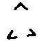
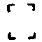
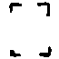

大正新脩大藏經 第18冊
No.853 大毘盧遮那成佛神變加持經蓮華胎藏菩提幢標幟普通真言藏廣大成就瑜伽 (3卷)
【唐 法全集】
第 1 卷
No. 853
大毘盧遮那成佛神變加持經蓮華胎藏菩提幢標幟普通真言藏廣大成就瑜伽卷上
(欲結契者敬白十方三世諸佛我等下輩愚鈍凡夫雖掌持此印由如蚊蟻掌須彌山恐無勢力唯願諸佛加護我等令我得成無上正覺結持此印同佛勢力發是語已至誠禮拜)。
稽首毘盧遮那佛 開敷淨眼如青蓮
我依大日經王說 供養所資眾儀軌
為成次第真言法 如彼當得速成就
欲於此生入悉地 授學處師同梵行
一切勿懷毀壞心 不造愚童心行法
不於諸尊起嫌恨 如世導師契經說
能損大利莫過瞋 一念因緣悉焚滅
俱胝曠劫所修善 是故慇懃常捨離
淨菩提心如意寶 能滿諸願滅塵勞
三昧智念由此生 是故我今勤守護
又常具足大慈悲 及與喜捨無量心
親於尊所授明法 觀察相應作成就
先禮灌頂傳教尊 請白真言所修業
智者蒙師許可已 依於地分所宜處
妙山輔峯半巖間 芰荷青蓮遍嚴池
大河經川洲岸側 遠離人物眾憒鬧
條葉扶疎悅意樹 多饒乳木及祥草
或諸如來聖弟子 常於往昔所遊居
寺塔練若古仙室 當於自心意樂處
悲愍有情畫大壇 具淨慧力能堪忍
是夜放逸所生罪 慇懃還淨皆悔除
心目視觀諦明了 五輪投地而作禮
歸命十方正等覺 三世一切具三身
歸命一切大乘法 歸命不退菩提眾
歸命諸明真實言 歸命一切諸密印
以身口意清淨業 慇懃無量恭敬禮
禮三繞三而讚歎 欲出亦還三禮讚
真言曰(持地印手印有四名其右智手云毘鉢舍那左定手名三昧亦云捨摩他)。
唵(引一)曩莫薩嚩怛他蘖多(二)迦野弭嚩吃質(二合)多(三)嚩日羅(二合)滿娜南迦嚕弭(四)
我由無明所積集 身口意業造眾罪
貪欲恚癡覆心故 於佛正法賢聖僧
父母二師善知識 及以無量眾生所
無始生死流轉中 具造極重無盡罪
親對十方現在佛 悉皆懺悔不復作
出罪真言曰(大慧刀印)。
唵(引)(一)薩嚩播波薩怖(二合)吒(二)娜訶曩嚩日囉(二合)野(二)娑嚩(二合引)賀(引)
曩莫十方三世佛 三種常身正法藏
勝願菩提大心眾 我今皆悉正歸依
歸依真言曰(普印)。
唵(引)(一)薩嚩沒馱冒地薩怛鑁(三合二)設羅赧蘖車弭(三)嚩日囉(二合)達磨(四)頡唎(二合五)
我淨此身離諸垢 及與三世身口意
過於大海剎塵數 奉獻一切諸如來
施身真言曰(獨股印)。
唵(引)(一)薩嚩怛他蘖多(二)布惹鉢囉(二合)嚩(無渴反)[口*栗]多(二合)曩夜怛麼(二合)南(三)涅哩(二合)夜(引)哆夜弭(四)薩嚩怛他(引)蘖多室者(二合)地底瑟姹(二合)擔(五)薩嚩怛他(引)蘖多惹難謎阿味設覩(引)(六)
淨菩提心勝願寶 我今起發濟群生
生苦等集所纏身 及與無知所害身
救攝歸依令解脫 常當利益諸含識
發菩提心真言曰(定印)。
唵(引)(一)冒地唧多(二)母怛跛娜夜弭(三)
十方無量世界中 諸正遍知大海眾
種種善巧方便力 及諸佛子為群生
諸有所修福業等 我今一切盡隨喜
隨喜真言曰(歸命合掌亦云金剛合掌)。
唵(引一)薩嚩怛佗蘖多(二)本惹(尼也反)惹曩(三)弩暮捺那布闍迷伽三暮捺囉(二合)(四)薩叵(二合)囉儜三麼曳(引五)吽
我今勸請諸如來 菩提大心救世者
唯願普於十方界 恒以大雲降法雨
勸請真言曰(普印)。
唵(引一)薩嚩怛他蘖多(二)睇灑儜布惹迷伽三暮捺囉(二合三)薩叵(二合)囉儜三麼曳(四)吽
願令凡夫所住處 速捨眾苦所集身
當得至於無垢處 安住清淨法界身
奉請法身真言曰(普通印)。
唵(引一)薩嚩怛他(引)蘖多(二)捺睇灑夜弭(三)薩嚩薩怛縛(二合)係多(引)[口*栗]佗(二合去)野(四)達麼馱覩悉體(他以反二合)底[口*栗]嚩(二合)靺覩(五)
所修一切眾善業 利益一切眾生故
我今盡皆正迴向 除生死苦至菩提
迴向真言曰(普通印)。
唵(引)(一)薩嚩怛他(引)蘖多(二)涅哩(二合)也怛曩(二合)布惹迷伽三暮捺羅(二合三)薩叵(二合)囉儜三麼曳(四)吽
(此入佛三昧之前承事法)
為令身心遍清淨 哀愍救攝於自他
身隨所應以安坐 分明諦觀初字明
輪圍九重虛圓白 正念運心四無量
入慈遍緣於六道 有情皆具如來藏
三種身口意金剛 以我所修功德力
同入普賢法界身
大慈三摩地真言曰。
唵摩賀(引)昧怛囉也(二合引)娑頗(二合)囉
悲心愍念諸有情 沈溺生死妄分別
起彼煩惱隨煩惱 不達真如平等理
超過河沙諸功德 以我所修三密力
普願等同虛空藏
大悲三摩地真言曰。
唵摩賀(引)迦嚕拏(上)夜(引)娑頗(二合)囉
喜心無量遍四生 本來清淨如蓮華
凡所修行及有情 同證觀世自在身
大喜三摩地真言曰。
唵秫(詩聿反)馱鉢囉(二合)謨(引)娜娑頗(二合)囉
捨心清淨遍法界 離我我所及蘊處
能所平等心不生 性相本寂同空庫
大捨三摩地真言曰。
唵摩護閉乞灑(二合引)娑頗(二合)囉
次當結三昧耶印(定慧虛心合空竪建如幢)能滿福智聚。所謂淨除三業道真言曰(以初三昧耶故。同如來祕密身口意平等。亦為自受用故。亦為立大悲胎藏壇故亦為加持如來眷屬故。亦五處真言各一遍。能除宿障以淨自身。令身淨故外障亦淨。故諸障皆不得入。此大護也。諸佛警覺滿其所願也。由不開法印故。不合聽聞一切諸法。若不先作。不合作諸法也)。
曩莫三滿多沒馱喃(歸命一切如來)阿三迷(無等謂三身也)怛哩(二合)三迷(三平等。法報化合為一身化眾生)三摩曳(三昧耶)娑嚩(二合)賀
纔結此印故 能淨如來地
地波羅蜜滿 成三法界道
次結法界生 密慧之標幟
淨身口意故 遍轉於身分
彼真言曰(以第二三昧耶故。得同如來加持法界宮尊特之身。又為成就法性身諸菩薩故。又為作毘盧遮那阿闍梨事故。又為加持蓮華部眷屬故。兩手各別作拳。竪頭指當胸。向裏而轉。兩頭從頂兩邊向裏曳頭指背向內。漸漸至心散。凡誦真言作印。喻如耕牛二頭同進不得前後也)。
曩莫三曼多沒馱喃達麼駄睹(法界)薩嚩(二合)婆嚩(自性亦本性也)句唅(我我即是法界。行者雖未體真性但以印真言即同法界也)
金剛薩埵真言曰(以第三三昧耶故。令自身土皆如金剛。與無量持金剛眾而自圍繞。又為折伏攝受隨類眾生故。為執金剛弟子事業故。又加持金剛眷屬故謂莊嚴金剛薩埵身故具說三三昧耶。由真言印故。令彼身心俱淨。能現見十方諸佛。法輪三隨轉能轉。無上大法輪於大千也)。
曩莫(歸命曩謨歸敬)三滿多(上普也)嚩日囉(二合)赧(一切金剛)嚩日羅(二合)怛摩呴含(謂我)
彼真言曰。
曩莫三滿多嚩日羅(二合)赧唵嚩日囉(金剛)迦嚩遮(甲)吽(因義三乘法故具論三身說法義果位得名因因出生生起義)
囉字色鮮白 空點以嚴之
如彼髻明珠 置之於頂上
所積眾罪垢 由是悉除滅
福智皆圓滿 一切觸穢處
當加此字門 赤色具威光
焰鬘遍圍繞 次謂降伏魔
制諸大障者 當念大護者
無能堪忍明
(諸佛平等力。不住於寂現大方便。由彼威光猛盛。如初生小兒。不堪視烈日之光。此亦如是。一切不能堪忍而敢映奪之者。此明王以此真言而護行者)。
彼真言曰。
曩莫薩嚩怛他(引)蘖帝毘藥(二合歸命一切如來)薩縛佩也尾蘖帝弊(能除一切諸障恐怖等)尾濕嚩(二合)目契弊(無量諸門巧妙)薩嚩他(引總諸佛功德)唅欠嚩(入)博索(空義法幢高峯觀)囉吃灑(二合擁護)摩訶沫麗(大力)薩嚩(一切)怛他(引)蘖多(如來)奔尼也(二合)涅左帝(功德生)吽吽(恐怖內外二障)怛囉(二合)吒(叱呵攝伏煩惱)怛囉(二合)吒(重言對治根本隨煩惱)阿鉢羅(二合)底訶諦(無對無比力)娑嚩賀(警覺一切賢聖謂作證明)
由纔憶念故 諸毘那夜迦
惡形羅剎等 彼一切馳散
警發於地神 應說如是偈
(雙膝長跪。定持杵當心。慧手舒五輪平掌按地)。
怛鑁(二合汝也)泥(引)尾(引地天有女聲)娑(引)乞叉(引二合護也)部(引)跢(引)悉(親也於也一)薩嚩(一切)沒馱(引)曩(佛有多聲)跢(引)易南(引度也有導師義二)左哩也(二合引行也)曩也(修也)尾勢(引)曬(引)數(入殊勝三)部(引)密(淨地)播囉蜜跢(引到彼岸)速者(等四)摩羅(天魔)細(引)便演(二合軍眾)怛他(引如)婆蘖南(二合破五)舍(引)吉也(二合釋迦也)僧呬(引)曩(師子)跢(引)易弩(引救世六)怛他(引)賀(如我)魔羅(魔)惹演(降)乞[口*栗](二合)怛嚩(二合引伏七)滿拏檻歷(曼荼羅)洛佉夜(引畫)沒藥(二合)唅(我八)
地神持次第真言曰(金剛縛開掌。仰按習三七。覆按亦復然。即成堅牢地)。
唵僕(引)欠
作壇真言曰。
灑淨真言曰(定拳安腰側。慧手散舒。風空相捻遍淨灑身五處。次香華飲食衣服并結界)。
曩莫三(去)滿多沒馱(引)南(引)(一)阿鉢囉(二合)底娑(上)謎(二)誐誐曩娑(上)謎(三)三滿多(引)弩(鼻音)蘖帝(引)(四)鉢囉(二合)訖哩(二合)底尾秫弟(引)(五)達磨駄(引)覩尾戍(引)馱[寧*頁](六)娑嚩(二合)賀
諸佛慈愍有情者 唯願存念於我等
我今請白諸賢聖 堅牢地神并眷屬
一切如來及佛子 不捨悲願悉降臨
我受此地求成就 為作證明加護我
持地真言曰(定拳如前相慧舒按於地)。
曩莫三(去)滿多沒馱(引)南(引)(一)薩嚩怛他蘖多(引二)地瑟咤(二合)曩(引)地瑟恥(二合)帝(三)阿佐麗(四)尾麼麗(五)娑麼(二合)囉禰(平)(六)鉢囉(二合)訖哩(二合)底鉢哩輸睇(七)娑嚩(二合)賀(引)
爾時薄伽梵。觀察一切法界入法界俱舍。以如來奮迅平等莊嚴藏三昧。自身表化雲遍。諸毛孔中出無量佛。以現法界無盡莊嚴故。以是真言行門。度無餘眾生界滿足本願。從眾聲門出隨類音聲。如其本性業生成就受用果報。顯形諸色種種語言心所思念。而為說法。令一切眾生皆得歡喜。展轉加持已還入法界宮中。復告祕密主言。有造曼荼羅聖尊分位種子標幟。汝當諦聽善思念之。五今演說優陀那曰(五種三昧耶。一本尊二真言三密印四三昧五種子)。
真言遍學者 通達祕密壇
如法為弟子 燒盡一切罪
壽命悉焚滅 令彼不復生
同於灰燼已 彼壽命還復
謂以字燒字 因字而更生
一切壽乃生 清淨遍無垢
以十二支句 而作於彼器
如是三昧耶 一切諸如來
菩薩救世者 及佛聲聞眾
乃至諸世間 平等不違逆
解此平等誓 祕密曼荼羅
入一切法教 諸壇得自在
我身等同彼 真言者亦然
以不相異故 說名三昧耶
現前觀囉字 謂淨光焰鬘
赫如朝日暉 念聲真實義
能除一切障 解脫三毒垢
諸法亦復然 先自淨心地
復淨道場地 悉除眾過患
其相如虛空 如金剛所持
此地亦如是 住本尊瑜伽
加以五支字 等引而運想
即同牟尼尊 阿字遍金色
用作金剛輪 加持於下體
說名瑜伽座 鑁字素月光
於在霧聚中 加持自臍上
是名大悲水 囕字初日暉
彤赤在三角 加持本心位
是名智火光 唅字劫災焰
黑色在風輪 加持白毫際
說名自在力 佉字及空點
想成一切色 加持在頂上
故名為大空 五字以嚴身
威德炬熾然 滅除眾罪業
天魔為障者 見赫奕金剛
首中百光王 心置無生句
胸表離染字 安立無垢眼
觀身同如來 復念滿足句
曩莫三曼多沒馱喃阿鑁覽唅欠

安立器世間 空風最居下
次觀火水地 是輪同金剛
名大因陀羅 光焰淨金色
普皆遍流出 次應念持地
而圖眾形像

爾時薄伽梵 觀察大眾會
告祕密主言 有法界幖幟
由是嚴身故 生死中巡歷
於如來大會 菩提幢幖幟
諸天龍夜叉 恭敬而授教
初印佛三昧 法界及法輪
憩伽歸命合 屈風空輪加(甲側)
法螺虛心合 風絞空輪上
吉祥願蓮華 金剛大慧印
摩訶如來頂 慧拳毫相藏
瑜伽持鉢相 智慧手上舒
名無畏施者 下垂號滿願(掌外)
慧拳舒火水(押空) 智者成佛眼
內縛風輪索 心印舒火輪
舒水如來臍 前印風入月
是名如來腰 如次習真言
大慧刀真言曰(金剛合掌亦云歸命。刀喻利智以能除斷為義。除惡見山峯如大山之峯撩亂甚多。煩惱亦爾。今此印能斷害身見及俱生見六十二見等。此刀即大智或云定慧虛心合。能斷截諸煩惱得無垢法身)。
曩莫三曼多沒馱(引)喃(引)(一)摩賀(引)朅伽尾囉惹(二)達摩珊捺囉(二合)奢迦娑訶惹(三)薩得迦(二合)野捺[口*栗](二合)瑟恥砌諾迦(四)怛他(引)蘖多尾目吃底(二合)儞(入)佐多(五)尾囉誐達磨儞(入)惹多吽(六)
大法螺真言曰(近口吹之如吹螺之狀。左右旋轉)。
曩莫三曼多沒馱喃暗(去。即得滿一切善願。宣說大法普得聞知。此是寂靜涅槃印)
蓮華座真言曰。
曩莫三滿多沒馱喃阿(去。金剛座猶坐此故。諸佛從此生。印名吉祥座。金剛不壞阿生諸佛)
金剛大慧真言曰(五峯印)。
曩莫三滿多嚩日囉(二合)赧吽
如來頂真言曰(即同仁者諸佛身。頂印安頂。想佛入身中相好圓滿)。
曩莫三滿多沒馱喃吽吽(具三解脫義。初為因後為果。因是如來行果是佛也)
如來頂相真言曰(阿闍梨右手為拳。置於頂上加持。一切諸天神不能見頂相)。
曩莫三曼多沒馱喃誐(體)誐曩(引虛空無量)難多娑叵(二合)囉儜(普遍)尾秫馱(清淨)達摩儞(入丁逸反)惹帝(法界生)娑嚩(二合)賀
毫相藏真言曰(慧拳置毫處。毫光遍十方。能滿願淨戒因)。
曩莫三曼多沒馱喃阿(急呼)唅惹(入)
大鉢真言曰(取袈裟手內角及搭肩之角。繞肘迴入手中。令二角如雙耳也。重於二手引上當臍。承鉢之形同如來。持河沙諸佛幖幟之儀令非器眾生堪為法器)。
曩莫三曼多沒馱喃婆(上急呼有。即三有也。以本不生故即離三有。而得如來真實之有。謂諸佛法身也)
施無畏真言曰(左手如前持衣二角。此印能除一切眾生種種怖畏憂患即得皆息。亦除未來種種大可怖畏也)。
曩莫三曼多沒馱喃薩嚩他(引遍也)爾那爾那(勝義。爾那爾那而最為勝能勝彼也。初離異生煩惱。次離二乘煩惱重言)佩野曩奢那(除恐怖也)娑嚩(二合)賀
與願滿真言曰(持衣如前。掌外如施水)。
曩莫三滿多沒馱喃嚩羅那(與也)嚩日囉(二合引金剛)怛麼(二合)迦(我也身也。意云願諸佛與我金剛身也。亦是受我大智之身即是滿其所願耳)娑嚩(二合)賀
悲生眼真言曰(地風押空背。反手三飾眼。成金篦除暗膜印。先右次左眼。以此祕密方便。能淨眼根成就佛眼。得見如來深密境界也。肉眼見一切色。天眼見一切眾生心。慧眼見一切眾生諸根境界。法眼見一切法如實相。佛眼見十力出華嚴五十七)。
曩莫三滿多沒馱喃誐誐曩(空也)嚩囉(願也)落吃叉(二合)儜(一切相)迦嚕拏(悲義)摩野(體義)怛他(引)蘖多(如來)作吃蒭(二合眼也)娑嚩(二合)賀
如來索真言曰(此索從如來信解中生。猶信解力中示現種種形類。或作忿怒或為持明。大力勢攝化有情)。
曩莫三曼多沒馱喃係係(呼召攝因有三昧義。呼成佛之因。此因本不生離因果相。令此因淨而復果淨也)摩賀播捨(大索也。離相之因是名大索)鉢羅(二合)娑勞(普也)那哩也(二合如空也。大索廣普無不遍也)薩埵(有情)馱睹(界有情界而攝)微謨訶迦(癡除)怛他蘖多(引如來)地目吃底(二合信解生。諸佛行菩薩道時。立大誓度一切眾生。今以此因要成果若住解脫之樂不憶本誓即違本願。此亦名癡。除此癡故使究竟恒作佛事也)儞(入生也)佐多娑嚩(二合)賀(能縛及破壞作障難者。從信解力生能現種種形。四攝度有情結除散亂風)
如來心真言曰(不易前指。申火相並微屈。能生大慧慈善深廣大方便)。
曩莫三曼多沒馱喃枳攘(二合)怒(智也即諸佛之智。此智不從他得。還從佛心生也)嗢婆(二合)嚩(生也)娑嚩(二合)賀
如來臍真言曰(阿密[口*栗]甘露。甘露者智之別名。能除身心熱惱。得而服之不老不死長壽之身。有心印微屈等)。
曩莫三滿多沒馱喃阿沒[口*栗](二合)都(甘露也除身心熱惱也)嗢婆(二合)嚩(生)娑嚩(二合)賀
如來腰真言曰(慧手地水火風如前皆少屈成佛妙色身自性成聖智)。
曩莫三滿多沒馱喃怛他(引)蘖多(引如來)三婆嚩(生)娑嚩(二合)賀
藏印虛心合 風屈空輪押
地水輪微曲 普光火內交
空入風水散 地輪竪相合
甲印虛心合 風幢加火背
舌相二空入 語門風水圓
竝空猶口形 牙印風入掌(準前)
辯說二風輪(準前印) 火側第三節
空輪微搖動 十力蓮華合
地空屈入月 掌內節相合
念處風捻空(準前印) 開悟圓風甲
地水空入掌 普賢如意珠
蓮合風加火 上節如寶形
慈氏印準前 屈風火輪下
空獻妙軍持
如來藏真言曰(除於二垢障悟佛清淨身)。
曩莫薩嚩怛他(引)蘖底弊藍藍(二除凡夫垢)[口*落][口*落](二除二乘垢)娑嚩(二合)賀
普光真言曰(亦圓光)。
曩莫三曼多沒馱喃入嚩(二合)攞(光)摩[口*履]儞(平鬘也以焰為鬘輪環不絕。名如來圓光)怛他(引)蘖多[口*栗]旨(體如來明白之光)娑嚩(二合)賀
如來甲真言曰(定慧虛心合。風持火輪側。空離火如小麥許。如一生補處菩薩。要被此無上菩提甲。坐金剛座降一切魔軍成於正覺。真言者要被此甲作於佛事)。
曩莫三曼多沒馱喃鉢囉(二合)戰拏嚩日囉(二合)入嚩(二合)攞(光)尾娑普(二合)囉(遍也)吽
如來舌相真言曰(得如來舌法音遍十方。常作如語不誑不惑不異語真實故常住)。
曩莫三曼多沒馱喃怛他蘖多(如來)爾訶嚩(二合舌也)薩底也(二合諦也)達磨(法)鉢羅(二合)底瑟恥(二合)多(成就之實諦法體)娑嚩(二合)賀
如來語真言曰(謂此語從如來無量門巧慧而生)。
曩莫三曼多沒馱喃怛他蘖多摩訶(引)嚩吃怛囉(二合語也)尾濕嚩(二合)枳孃(二合)曩(種種巧智也)摩護那也(大廣也)娑嚩(二合)賀
如來牙真言曰。
曩莫三滿多沒馱喃怛他(引如)蘖多(來)能(去)瑟吒囉(三合牙也)囉娑囉娑(引味也味中上味)釳囉(二合)參鉢囉(二合引)博迦(得也)薩嚩怛他(引)蘖多(如來)尾灑也(境界也)糝婆嚩(生也)娑嚩(二合)賀
如來辯說真言曰(由此印故處眾無畏。為人演說正法。乃至一字中含無窮義。辯才不可窮盡也)。
曩莫三曼多沒馱喃阿振底也(二合不思議)那部(二合)多(奇特)路波嚩(引語之分段)三麼哆(上普至也佛以一音演說法等)鉢囉(二合)鉢多(二合至也得也)尾輸(上)馱(清淨)娑嚩(二合)囉(言音也)娑嚩(二合)賀
如來持十力真言曰(由此智印能持如來十力支分也)。
曩莫糝曼多沒馱喃捺奢沫浪(十力身)誐達囉(持也)吽三髯娑嚩(二合)賀
如來念處真言曰。
曩莫三滿多沒馱喃怛他(引)蘖多(如來)娑麼[口*栗](三合)底(念)薩怛嚩(二合)係怛嚩(二合眾生利益也)毘庾(二合)嗢蘖(二合)多(生也起也)誐誐曩三忙(虛空等生也)糝麼(無等)娑嚩(二合)賀
一切法平等開悟真言曰。
曩莫三曼多沒馱喃薩嚩達麼(一切法)三麼多(平等)鉢囉(二合)鉢多(二合至也得也一切平等)怛他(引)蘖多(如來)弩蘖多(隨同佛如是開悟)娑嚩(二合)賀(已上如來身會)
普賢菩薩如意珠真言曰(此菩薩所有三業普遍賢善。諸佛菩薩之所敬歎也)。
曩莫糝滿多沒馱(引)喃(引)參麼多弩蘖多(平等至也進去往也)尾囉惹(離塵垢障也)達麼(法也)儞(入)社多(生也言無垢從法而生)摩賀摩賀(重言如天中天。諸菩薩等供養於佛。佛轉供養普賢。菩薩身與三世佛等。天中天大供養中供養)娑嚩(二合)賀(菩提萬行從茲生眾願滿足故名珠也)
慈氏菩薩真言曰(住發生普遍大慈三昧。印同諸佛窣堵波)。
曩莫三滿多沒馱(引)喃(引)阿(體)爾單(古云阿逸多其義無勝一切愛見煩惱及二乘等無有能勝)惹野(得勝於無勝中得勝)薩嚩薩怛嚩(二合一切眾生也)奢野(性心性也謂先世所習諸根性欲)弩蘖多(知也能了知眾生諸根性欲)娑嚩(二合)賀
時佛住甘露生三昧。說一切三世無閡力明妃真言曰(頂印與第二卷虛空眼妃同用)。
怛儞也(二合)他(一)誐誐曩三謎(二)阿鉢囉(二合)底(丁以反)三謎(三)薩嚩怛他(引)蘖多三麼跢弩蘖帝(四)誐誐曩三麼(五)嚩羅[口*落]乞叉(二合)嬭(平)(六)娑嚩(二合)賀(引)
無能害力明妃真言曰(以梵夾印八遍從前定起更入無量勝三昧)。
曩莫薩嚩怛他(引)蘖帝毘藥(二合)薩嚩目契毘藥(二合)阿三迷(三)鉢囉(二合)謎(四)阿者隸(五)誐誐泥薩麼(二合)囉嬭(六)薩嚩怛囉(二合)弩蘖帝(七)娑嚩(二合)賀(引)(此明意。在警發諸佛令憶本誓然後調下彩色)
大海真言曰(二印相互相叉二空散舒右旋。是海水印。準前印右風甲押左風面。定之不動。即八功德水印)。
唵尾摩嚕娜地吽
金剛手持華(內五智印)。
嚩(入莖)嚩日羅(二合)播抳(此大真言王印口授)
以妙蓮華王 持於華藏界
(口授此上印四道祕授)。
最初正覺等 敷置曼荼羅
密中之祕密 大悲胎藏生
及無量世間 出世曼荼羅
彼所有圖像 次第說當聽
四方普周匝 一門及通道
金剛印遍嚴 中羯磨金剛
其上大蓮華 妙色金剛莖
八葉具鬚蘂 眾寶自莊嚴
開敷含果實 於彼大蓮印
大空點莊嚴 十二支生句
普遍華臺中 常出無量光
百千眾蓮繞 其上復觀想
大覺師子座 寶王以嚴飾
在大宮殿中 寶柱皆行列
遍有諸幢蓋 珠鬘等交絡
垂懸妙寶衣 周匝香華雲
及與眾寶雲 普雨雜華等
繽紛以嚴地 諧韻有愛聲
而奏諸音樂 宮中想淨妙
賢瓶與閼伽 寶樹王開敷
照以摩尼燈 三昧總持地
自在之婇女 佛波羅蜜等
菩提妙嚴華 方便作眾伎
歌詠妙法音 供養諸如來
以我功德力 如來加持力
及以法界力 普供養而住(普印)
結大輪壇印 次眾色界道
囉(白色中)囕(赤色幢)迦(黃色華)麼(青色彌)訶(黑色音界道金剛大慧印二)
觀彼中胎內(諸尊種子一一分明安布先想圓光)
普光淨月輪 阿字置其中
次當轉阿字 成大日牟尼
清淨離諸垢 妙色超三界
綃縠嚴身服 寶冠紺髮垂
寂然三昧地 輝焰過眾電
猶如淨鏡內 幽邃現真容
喜怒顯形色 操持與願等
正受相應身 明了心無亂
無相淨法體 應願濟群生
以八曼荼羅 眷屬自圍繞
次東遍知印 北方觀自在
南置金剛手 依涅哩底方
不動如來使 風方勝三世
四方四大護 初門釋迦文
第三妙吉祥 南方除蓋障
勝方地藏尊 龍方虛空藏
蘇悉地眷屬 護世威德天
次第而分布 次應執香鑪
淨治真言曰。
唵(引)蘇悉地羯哩入縛(二合)里多(上)曩南(去)多(上)謨(上)囉多(二合上)曳入縛(二合)羅滿馱滿馱賀曩賀曩吽泮吒(半音)
彼真言曰(如來謂息一切障故。住火生三昧說摧大障者真言。謂行人從初發菩提心守護增長。至令成佛果終不退失。不墮在非道中)阿左羅曩(引)他。
曩莫三曼多嚩日囉赧戰拏(極惡謂暴惡也又甚暴惡也)摩賀路灑儜(大忿怒也)娑破(二合)吒也(破壞也)吽(恐怖也)怛囉(二合)迦(堅固也)悍(引)[牟*含](引二字種子也)
次以印真言 而請召眾聖
諸佛菩薩說 依本誓而來
定慧內成拳 慧風屈如鉤
隨召而赴集(灌頂時以此鉤印引行者入門)
真言曰(此鉤印能召十方諸佛菩薩。集會道場滿足十地位。況餘八部未生善心者。而不來至耶。能招諸佛大功德海。悉滿一切如來功德。普召一切眾生。亦令得此道也)。
曩莫三滿多沒馱(引)喃(一)阿(去急呼)薩嚩怛囉(二合一切所害身)鉢囉(二合)底訶諦(二)怛佗蘖黨(如來)矩奢(鉤三)冒地浙哩也(二合菩提行)鉢哩布囉迦(四)娑嚩(二合)賀(七遍索鎖鈴除障不動)
次示三昧耶 速滿無上願
令本真言主 諸明歡喜故
次執金剛杵 抽擲振金鈴
所獻閼伽水 如法已加持
奉諸善逝者 用浴無垢身
先右後左膝 至額三奉獻
次當淨一切 佛口所生子
(不動尊加持二十五遍。蓮合風絞火。空持風下節)
真言曰(變成寶淨香水海 底布金沙八德盈 想浴眾聖淨無垢 大悲胎藏大智海 能洗眾塵證法身)。
曩莫三滿多沒馱(引)喃(引)誐誐曩(虛空)三摩(引等)三摩(引無等)娑嚩(二合)賀(引)
次奉華座真言曰(加護不動偈曰)。
曩莫三滿多沒馱(引)喃(引)阿(引)
佉字大空點 而置於頂上
轉身作薩埵 金剛種子心
遍布諸支分 諸法離言說
以具印真言 即同執金剛
彼真言曰(五股三股)。
曩莫三曼多嚩日囉(二合)赧(一)戰拏摩訶嚕灑拏(平)(二)吽
遍身被服甲
次應一心作 摧伏諸魔印
真語共相應 慧拳舒風輪
加於白毫際 如毘俱胝形
纔結是法故 當觀遍此地
金剛熾焰光 能除極猛利
無量天魔軍 及餘為障者
必定皆退散(左拳安腰)
怖魔真言曰(面如忿怒心住一境。能現如來威猛大勢之力。能滿一切眾生所願。如來菩提樹下以此印摧伏諸魔)。
曩莫三滿多沒馱(引)喃(引)(一)摩訶(引)沫羅(二合大力)嚩底(二)捺奢嚩路(十力)嗢婆(二合)吠(平持也三)摩訶(引)昧怛哩也(三合大慈)毘庾(二合)嗢蘖(二合)底(發生四)娑嚩(二合)賀(引)
次用難堪忍 密印明結護
藏印散水輪 旋轉指十方
是名結大界 用持十方國
能令悉堅住 是故三世事
悉能普護之 威猛無能覩
大界真言曰(謂初發大菩提心乃至成佛。不令間斷不退菩提。即大界義也)。
曩莫三曼多沒馱(引)喃(引)薩嚩怛羅(二合)弩蘖帝(一切方處謂十方皆須遍結)滿馱野(結)徙瞞(界)麼訶三摩野(大三昧耶)涅囉者(二合)帝(從生也)娑麼(二合)囉嬭(憶念)阿鉢囉(二合)底訶帝(無有能害亦云無礙無壞)馱迦馱迦(光威由光威故成界)折囉折囉(遍往十方結界)滿馱滿馱(結)捺奢(十)儞以(二合)羶(方)薩嚩怛他蘖多(一切如來)弩枳惹(二合)帝(教)鉢囉(二合)嚩囉(所證)達麼(法)臘馱(獲也得也)尾惹曳(無能勝)婆(真言主)誐嚩底(世尊)尾矩[口*履](除也能除垢也)尾矩[口*(隸-木+上)](前句除有相垢後句除離相之垢)麗(種子)魯補哩(宮)娑嚩(二)賀(引)
第二略說真言(歸命一切聖凡不合越此界。若故同前越者犯三昧耶。決定不安聖眾張罸。越聖言誓故)。
四方四大護 無畏壞諸怖
難降伏護者 無堪忍普護
大界火內交 散舒二風輪
法幢高峯觀 哀愍無餘眾
帝釋方華臺 嚩字光轉成
無畏結護者 金色妙白衣
面現少忿怒 手持於檀荼
夜叉方博字 壞諸怖結護
素衣潔白色 手持於朅伽
龍方觀索字 轉成難降伏
色如無憂華 朱衣現微笑
而觀於眾會 焰魔方唅欠
成無勝結護 黑色玄服衣
毘俱眉浪文 首戴髮髻冠
光照眾生界 手持檀荼印
及一切眷屬 皆坐白蓮華
真言及密印 如前已開示
門門二守護 無能三昧拳
舉翼輪開敷 智拳心舒風
猶如相擬勢 相對舉慧拳
狀如相擊勢(右拳也)
不可越守護(赤白色作極忿怒形)真言曰(此二守護威猛熾盛故。如百千日無敢視者。常在如來內門而奉教命一切魔不能嬈亂)。
曩莫三滿多嚩日囉(二合)赧訥囉馱(二合)[口*履]灑(二合此是名即不可視越義難降伏也)摩賀[口*路]灑拏(大忿怒也)佉(種子)捺野(喫也一切煩惱食也)薩鑁娑怛(二合)他(引)蘖多(一切如來)然(教勅)矩嚕(作也令行如來教勅也)娑嚩(二合)賀
相向守護真言曰(與難勝相對挾門。故為名色準前)。
曩莫三滿多嚩日囉(二合)赧係(呼名)阿鼻目佉(引相對也)摩賀(大)鉢囉(二合極也)戰拏(大極忿怒暴惡也)佉(一切善生種)那野(食喫也)緊旨囉也徙(可不速也)三摩野(如前本誓)摩弩娑麼(二合)囉(憶念也本於一切如來前立誓。噉一切煩惱。今何不憶本所願急速作之也)娑嚩(二合)賀
塗香真言曰(此供養以前更奉獻水（出次第及釋中）奉食有四種說。佛菩薩金剛諸天)。
曩莫糝滿多沒馱(引)喃(引)尾(真言體)輸馱(淨)誐度(塗香)納婆(二合)嚩(發生)娑嚩(二合)賀
華鬘真言曰(相叉印蓮掌置額。右旋轉遍法界。開現眾華王萬德皆圓滿)。
曩莫糝滿多沒馱(引)喃(引)摩賀(引)妹(真言體心義)怛哩也(三合大慈)毘廋(二合)訥蘖帝(生)娑嚩(二合)賀
焚香真言曰(地水火相背。二風側相合。空捻風輪側。水火四輪上節開。額前旋轉如香雲)。
曩莫三滿多沒馱(引)喃(引)達(體)摩(法)馱怛嚩(二合界)弩蘖帝(隨義遍至)娑嚩(二合)賀
飲食真言曰(密合。法喜禪悅食能開甘露門。常以妙供獻諸佛。下及神鬼悉皆通。飲食施福田世世令豐足)。
曩莫糝滿多沒馱(引)喃(引)阿囉囉(不可樂聞聲不善聲)迦囉囉(止前不善聲。是恬怕寂義。正以法喜禪悅為食)末隣(上)捺娜弭(西方享祭之食)沬隣捺禰(受我食已還我妙食)摩賀沫瀝(廣大豐美)娑嚩(二合)賀
燈明真言曰。
曩莫糝滿多沒馱(引)喃(引)怛(體也)佗(引)蘖多(引如來也)囉[口*旨](二合焰明也)娑叵(二合)囉儜(普遍)嚩婆(引)娑曩(諸暗)誐誐猱那哩也(二合無限量等虛空)娑嚩(二合)賀
虛空藏菩薩普供養真言曰。
曩莫薩嚩怛佗蘖帝(歸命一切如來)[口*驃](等也)尾濕嚩(二合是種種門義巧義)目契弊(門等)薩嚩他(一切)欠(一切智空種)嗚娜蘖帝(生也)娑頗(二合)囉係[牟*含](普遍)誐誐娜劍(平引虛空)娑嚩(二合)賀(於印上想一寶蓮華。上想普通種子字。亦從此字流種種供養。流出作金色)
毘盧遮那位 及行者所居
海會剎塵眾 眷屬自圍繞
次以清雅音 讚佛功德海
法身法界體 諸佛功德海
應以清雅音 歌詠而讚曰
薩嚩尾也(二合)比婆(去)嚩訖囉(二合)訖哩(二合)也(一切善生種)素蘖哆地(引)鉢帝爾(而以反)曩(妙用體無礙)怛[口*賴](二合)馱覩迦摩訶攞(引)佐(三界如大王)尾嚕左曩曩謨(引)娑覩(二合)諦(遍照我頂禮)
成就菩提報身讚曰。
阿難多摩(引)畢跢(引)娑虞(上)娜者藍(引)(一)曩莫三摩娑瞻(二合)素蘖耽怛囉(二合)迦攞沓(引)摩賀摩賀(引)難帝摩賀摩賀紇哩(二合)沓(引)(三)摩賀摩賀(引)拽野摩賀摩賀(引)阿怛麼(二合)喃(引四)
金剛應身讚曰。
嚩每迦旨囉娑跢擗曩[寧*頁]素多曩娑怛鑁(三合)跛曬迦賀娑多(二合)鼻哩(二合)俱胝(二合)穆佉髻迦羅(引)乞懺(二合)悉底哩野(四合)地尾罽(引)爾娜嚩哩(引)鉢囉(二合)底僧娑覩(二合)多(引)娑怛鑁(三合三)阿(引)哩擿曩麼彌野(二合)阿者攞制吒(去)喃(引)地(上)焰(四)